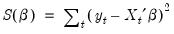
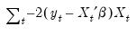
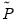
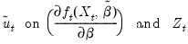

|
|
|


and  are the projection matrices corresponding to the expressions for the estimators in “Instrumental Variables and GMM”, and
is the log likelihood contribution function.
To view the summary of the gradients, select View/Gradients and Derivatives/Gradient Summary, or View/Gradients/Summary. EViews will display a summary table showing the sum, mean, and Newton direction associated with the gradients. Here is an example table from a nonlinear least squares estimation equation:Lastly, there is a table showing the sum and mean of the gradients as well as a column labeled “Newton Dir.”. The column reports the non-Marquardt adjusted Newton direction used in first-derivative iterative estimation procedures (see “First Derivative Methods”).In the example above, all of the values are “close” to zero. While one might expect these values always to be close to zero when evaluated at the estimated parameters, there are a number of reasons why this will not always be the case. First, note that the sum and mean values are highly scale variant so that changes in the scale of the dependent and independent variables may lead to marked changes in these values. Second, you should bear in mind that while the Newton direction is related to the terms used in the optimization procedures, EViews’ test for convergence does not directly use the Newton direction. Third, some of the iteration options for system estimation do not iterate coefficients or weights fully to convergence. Lastly, you should note that the values of these gradients are sensitive to the accuracy of any numeric differentiation.You can save the individual gradient values in series using the Make Gradient Group procedure. EViews will create a new group containing series with names of the form GRAD## where ## is the next available name.

 , yielding
, yielding are the estimated residuals under the restricted (null) model, and
are the estimated residuals under the restricted (null) model, and  are the estimated coefficients. The
are the estimated coefficients. The  are a set of “misspecification indicators” which correspond to departures from the null hypothesis.
are a set of “misspecification indicators” which correspond to departures from the null hypothesis.